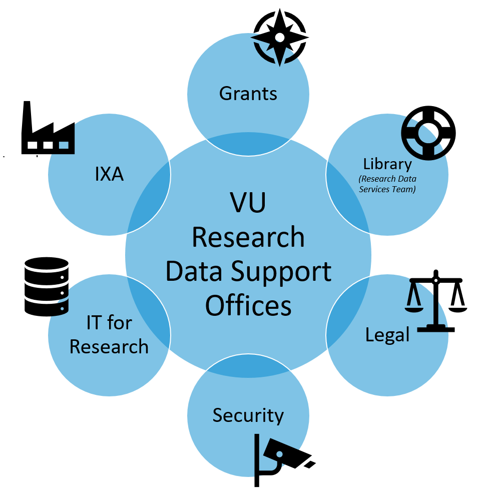

What research data services and support are available for VU researchers?
Support
Research Data Services

Research Data Management is supported by various departments at the VU. These departments will help all VU researchers. There are also faculty specific support departments for research data support; they support their own faculty members.
Here you find references to other organisational units and departments that can help you with matters related to collecting and managing data.
VU research data support (for all researchers)*
General Faculty research support and management guidelines are available in the section Policies & Regulations.
This LibGuide
Questions regarding your data or the information on this website?
The RDS Support team can help you with all your question on data management plan, data archiving, data store or data privacy & security.
VU IT for Research
The VU has an IT team specifically devoted to research: ITvO (from ‘IT voor Onderzoek’ in Dutch). They provide the following services:
- 🔒 Bazis HPC cluster computing: access to your own linux computational cluster at the VU
- 🔒 SciCloud: a service with which you lease virtual server capacity for research purposes
- 🔒 SciStor: inexpensively store large sets with research data
- Advice/consultancy: ITvO will help you to find a suitable technical solution or support for your research group or project
- Housing: rack space in the server room for (remotely managed) equipment of research groups
Read more about and get in touch with 🔒 IT for Research
External sources
- Research Data Netherlands
- Research Data Netherlands is an alliance between 4TU.Centre for Research Data, Data Archiving and Networked Services (DANS) and SURFsara. With this coalition, which is also open to other parties, the three data archives join forces in the area of long-term data archiving.
- Landelijk Coördinatiepunt Research Data Management
- The foundation of co-operating Dutch universities (VSNU) pointed out a need for a co-ordinated and decisive approach to Research Data Management through a dedicated Centre at SURF. The SURF Foundation is an organisation that facilitates education and research in the Netherlands.
- The LCRDM aims to support the preparation, development and monitoring of Research Data Management policies for scientific research in the Netherlands. Important elements of this central approach are close co-operation with researchers in the field and the exchange of knowledge and experience.
- The foundation of co-operating Dutch universities (VSNU) pointed out a need for a co-ordinated and decisive approach to Research Data Management through a dedicated Centre at SURF. The SURF Foundation is an organisation that facilitates education and research in the Netherlands.
 The Netherlands eScience Center
The Netherlands eScience Center
- The eScience Center develops software for academic research specifically. Their software and tools enhance the use of digital methods in scientific research across all disciplines. Researchers - including those at the VU - can choose to collaborate on projects funded by the NWO or, if they already have funding, ask the eScience Center to collaborate with them.
 CESSDA
CESSDA
- The Data Management Expert Guide of the Consortium of European Social Science Data Archives is a practical guide for researchers, addressing many issues they may have
SURFsara
SURF is the collaborative organisation for ICT in Dutch education and research. SURF offers advanced ICT services specifically for researchers. You can start using some of these services right away with your VU credentials. For others you have to get in touch with SURF yourself. Please check SURF’s website and the pages about the specific services below for more information.
SURF’s services are listed on this page.
Data services
SURF offers a wide range of services for different phases in the life cycle of your research data. Everything for the secure storage, management, sharing and reuse of data.
- Research Drive: securely and easily store and share research data.
- Does your research team need large storage quotas, a secure environment to store personal and/or sensitive data, and work collaboratively with other educational and governmental institutions or external private parties? Research Drive is a cloud-based shared-storage environment specifically designed for these requirements.
- SURFfilesender: send large files securely and encrypted.
- Want to send and receive files quickly, securely and easily? With SURFfilesender, you can send large files, such as research data. The files are stored in the Netherlands. Encryption provides added security.
- Store and share your files securely in the cloud with SURFdrive.
- Store, synchronise and share your documents easily with SURFdrive. SURFdrive is a personal cloudservice for the Dutch education and research. Your documents are kept safe and sound in our community cloud.
- Secure, long-term storage with Data Archive.
- The Data Archive is the centralised location for data archiving and (long-term) storage. You can securely store research data there, even in volumes running into the petabytes. The archive provides quick access to SURFsara’s computing facilities.
- Data Persistent Identifier: data always findable by permanent references.
- Persistent identifiers (PIDs) ensure the findability of your data, now and always. PIDs are comparable to the ISBN numbers assigned to books. Even if the location or underlying infrastructure changes, the reference path remains intact. SURFsara offers the PID service in cooperation with the European Persistent Identifier Consortium (EPIC).
Data processing and analysis (see also ‘Computing’)
- Jupyter Notebook: accessible and interactive data analysis for research and education.
- A Jupyter Notebook is an interactive web application that you can use to create documents, known as notebooks, that contain computer code, formatted text, comparisons and visualisations. The code can be executed in the environment and you can even create streaming applications and dashboards.
Computing
Do you encounter limitations with your own systems? SURF offers researchers a wide range of services in the field of high performance computing (HPC): thousands of times faster than your PC.
- Cartesius: National Super Computer.
- It is the most comprehensive system in the field of capability computing in the Netherlands. Cartesius is especially in high demand for its combination of fast processors and internal network, large storage capacity and the ability to process large datasets.
- Lisa Compute Cluster: extra processing power for research.
- Lisa Compute Cluster combines processing power with user friendliness. Are the limits of your own system inhibiting your research? This service lets you upscale to a higher level. Lisa Compute Cluster is preconfigured with a range of software packages, meaning you can start working right away.
- HPC Cloud: your flexible compute infrastructure.
- HPC Cloud gives you and your project team complete control over your computing infrastructure. The infrastructure ranges from a single work station to a complete cluster and can be expanded to suit your needs. You can use your own operating system and analysis software. HPC Cloud is housed in SURF’s own data centre.
- Grid: for processing and storing large datasets.
- Do you want to process and store large- amounts of data? The Grid may very well be suitable for your project. The grid infrastructure consists of a large number of clusters for computing and data storage, which are interconnected via a fast network.
- Visualisation: more insight into your data.
- Do you want to analyse, process or visualise complex research data or big data? These services give you insight into your research data. SURF’s Visualisation service allows you to visualise your own datasets on your desktop. This makes it easy to identify connections between data or gain other insight into your datasets. SURFsara offers a powerful remote visualisation service that combines high performance with ease of use.
- Collaboratorium: a visualization and presentation space for science and industry.
Expertise, advice and training
SURF offers advice and training on their services. Their training sessions are announced in the SURF Agenda.
- SURF Training courses for research.
- Want to get started with SURF systems but lack the necessary knowledge? SURF regularly organizes hands-on systems training courses at their offices in Utrecht and Amsterdam or at your education or research institution. You can also include the training courses in the educational programme of your institution.
- SURF Consultancy on ICT solutions for researchers.
- SURFsara possesses a wealth of experience in the field of ICT services for researchers. If you need help developing/improving your application or designing your infrastructure, then you’ve come to the right place. SURF experts will be happy to lend their expertise to support your research.